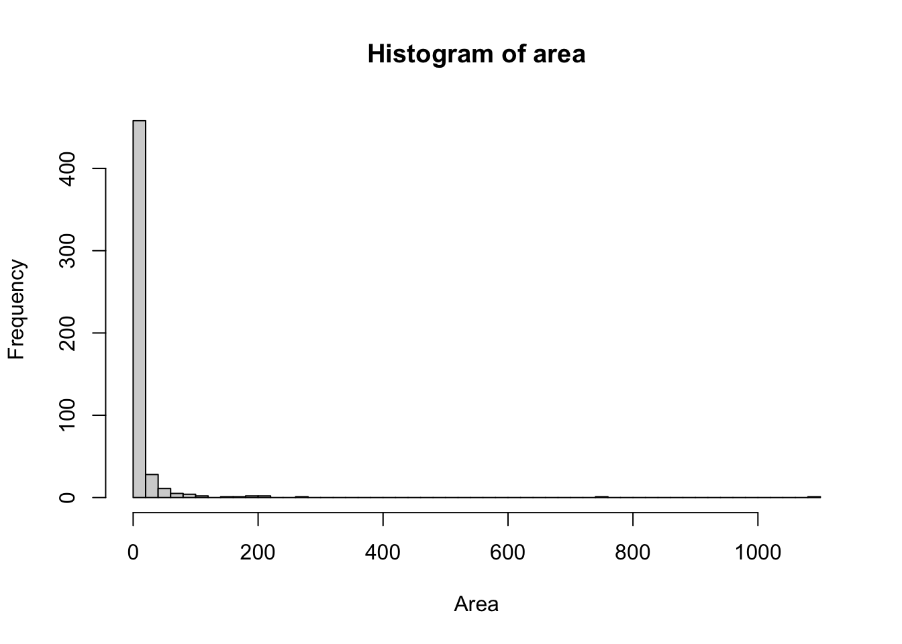
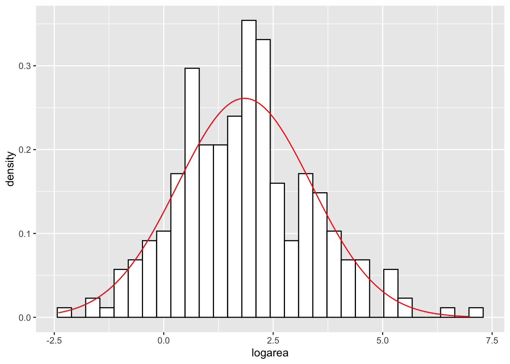
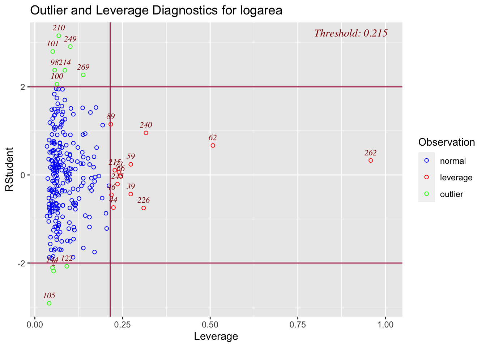

# Add season category
fire <- read.csv("forestfires.csv", header=TRUE, sep = ",")
fire$season <- rep("spring", 517)
for (i in 1:517){
if (fire$month[i] %in% c("feb","jan","dec")) fire$season[i] <- "winter"
if (fire$month[i] %in% c("oct","nov","sep")) fire$season[i] <- "autumn"
if (fire$month[i] %in% c("aug","jul","jun")) fire$season[i] <- "summer"
}
fire$season <- as.factor(fire$season)
fire$season.cat <- rep(0, 517)
for (i in 1:517){
if (fire$season[i] == "summer") {
fire$season.cat[i] <- 1
}
if (fire$season[i] == "autumn") {
fire$season.cat[i] <- 2
}
if (fire$season[i] =="winter") {
fire$season.cat[i] <- 3
}
}
head(fire)## X Y month day FFMC DMC DC ISI temp RH wind rain area season season.cat
## 1 7 5 mar fri 86.2 26.2 94.3 5.1 8.2 51 6.7 0.0 0 spring 0
## 2 7 4 oct tue 90.6 35.4 669.1 6.7 18.0 33 0.9 0.0 0 autumn 2
## 3 7 4 oct sat 90.6 43.7 686.9 6.7 14.6 33 1.3 0.0 0 autumn 2
## 4 8 6 mar fri 91.7 33.3 77.5 9.0 8.3 97 4.0 0.2 0 spring 0
## 5 8 6 mar sun 89.3 51.3 102.2 9.6 11.4 99 1.8 0.0 0 spring 0
## 6 8 6 aug sun 92.3 85.3 488.0 14.7 22.2 29 5.4 0.0 0 summer 1# Area log transformation (for area>0)
hist(fire$area,40, main = "Histogram of area", xlab = "Area")
fire["logarea"] <- ifelse(fire$area >0, log(fire$area), NA)
ggplot(data=fire, aes(x=logarea))+
geom_histogram(aes(y=..density..), col="black",fill="white")+
stat_function(fun=dnorm, args = list(mean=mean(fire$logarea, na.rm = TRUE), sd = sd(fire$logarea, na.rm=TRUE)),col="red")## `stat_bin()` using `bins = 30`. Pick better value with `binwidth`.## Warning: Removed 247 rows containing non-finite values (stat_bin).
# Outliers
ols_plot_cooksd_chart(mod_lin) #number 262 datapoint in this data set, which is id=500ols_plot_resid_lev(mod_lin)
`
cooksd <- cooks.distance(mod_lin)
plot(cooksd, pch="*", cex=2, main="Influential Obs by Cooks distance") # plot cook's distance
abline(h = 4*mean(cooksd, na.rm=T), col="red") # add cutoff line
text(x=1:length(cooksd)+1, y=cooksd+0.001, labels=ifelse(cooksd>4*mean(cooksd, na.rm=T),names(cooksd),""), col="red")# Get rid off the outliers
influential = which(cooksd>4*mean(cooksd, na.rm=T)) # influential points
area_posit[influential, ] #all data for influential points## X Y month day FFMC DMC DC ISI temp RH wind rain area season season.cat logarea
## 139 9 9 jul tue 85.8 48.3 313.4 3.9 18.0 42 2.7 0.0 0.36 summer 1 -1.02165125
## 144 1 2 jul sat 90.0 51.3 296.3 8.7 16.6 53 5.4 0.0 0.71 summer 1 -0.34249031
## 148 8 3 sep tue 84.4 73.4 671.9 3.2 24.2 28 3.6 0.0 0.96 autumn 2 -0.04082199
## 200 2 4 sep mon 63.5 70.8 665.3 0.8 22.6 38 3.6 0.0 11.32 autumn 2 2.42657107
## 239 6 5 sep sat 92.5 121.1 674.4 8.6 25.1 27 4.0 0.0 1090.84 autumn 2 6.99470332
## 267 6 5 aug tue 94.3 131.7 607.1 22.7 19.4 55 4.0 0.0 0.17 summer 1 -1.77195684
## 416 8 6 aug thu 94.8 222.4 698.6 13.9 27.5 27 4.9 0.0 746.28 summer 1 6.61510086
## 421 8 8 aug wed 91.7 191.4 635.9 7.8 26.2 36 4.5 0.0 185.76 summer 1 5.22445552
## 470 6 3 apr sun 91.0 14.6 25.6 12.3 13.7 33 9.4 0.0 61.13 spring 0 4.11300274
## 474 9 4 jun sat 90.5 61.1 252.6 9.4 24.5 50 3.1 0.0 70.32 summer 1 4.25305625
## 480 7 4 jul mon 89.2 103.9 431.6 6.4 22.6 57 4.9 0.0 278.53 summer 1 5.62952577
## 500 7 5 aug tue 96.1 181.1 671.2 14.3 27.3 63 4.9 6.4 10.82 summer 1 2.38139627
## 514 2 4 aug sun 81.6 56.7 665.6 1.9 21.9 71 5.8 0.0 54.29 summer 1 3.99434005dat <- area_posit[-influential,] #get rid off the influential points
head(dat)## X Y month day FFMC DMC DC ISI temp RH wind rain area season season.cat logarea
## 140 1 4 sep tue 91.0 129.5 692.6 7.0 21.7 38 2.2 0 0.43 autumn 2 -0.8439701
## 141 2 5 sep mon 90.9 126.5 686.5 7.0 21.9 39 1.8 0 0.47 autumn 2 -0.7550226
## 142 1 2 aug wed 95.5 99.9 513.3 13.2 23.3 31 4.5 0 0.55 summer 1 -0.5978370
## 143 8 6 aug fri 90.1 108.0 529.8 12.5 21.2 51 8.9 0 0.61 summer 1 -0.4942963
## 145 2 5 aug wed 95.5 99.9 513.3 13.2 23.8 32 5.4 0 0.77 summer 1 -0.2613648
## 146 6 5 aug thu 95.2 131.7 578.8 10.4 27.4 22 4.0 0 0.90 summer 1 -0.1053605new_dat <- rbind(fire[which(fire$area==0),], dat) #join the area_positive w/o influential points to the data w/ area=0
new_dat$burn <- ifelse(new_dat$area==0,0,1) #to get the new dataset without the influential points
new_dat## X Y month day FFMC DMC DC ISI temp RH wind rain area season season.cat logarea burn
## 1 7 5 mar fri 86.2 26.2 94.3 5.1 8.2 51 6.7 0.0 0 spring 0 NA 0
## 2 7 4 oct tue 90.6 35.4 669.1 6.7 18.0 33 0.9 0.0 0 autumn 2 NA 0
## 3 7 4 oct sat 90.6 43.7 686.9 6.7 14.6 33 1.3 0.0 0 autumn 2 NA 0
## 4 8 6 mar fri 91.7 33.3 77.5 9.0 8.3 97 4.0 0.2 0 spring 0 NA 0
## 5 8 6 mar sun 89.3 51.3 102.2 9.6 11.4 99 1.8 0.0 0 spring 0 NA 0
## 6 8 6 aug sun 92.3 85.3 488.0 14.7 22.2 29 5.4 0.0 0 summer 1 NA 0
## 7 8 6 aug mon 92.3 88.9 495.6 8.5 24.1 27 3.1 0.0 0 summer 1 NA 0
## 8 8 6 aug mon 91.5 145.4 608.2 10.7 8.0 86 2.2 0.0 0 summer 1 NA 0
## 9 8 6 sep tue 91.0 129.5 692.6 7.0 13.1 63 5.4 0.0 0 autumn 2 NA 0
## 10 7 5 sep sat 92.5 88.0 698.6 7.1 22.8 40 4.0 0.0 0 autumn 2 NA 0
## 11 7 5 sep sat 92.5 88.0 698.6 7.1 17.8 51 7.2 0.0 0 autumn 2 NA 0
## 12 7 5 sep sat 92.8 73.2 713.0 22.6 19.3 38 4.0 0.0 0 autumn 2 NA 0
## 13 6 5 aug fri 63.5 70.8 665.3 0.8 17.0 72 6.7 0.0 0 summer 1 NA 0
## 14 6 5 sep mon 90.9 126.5 686.5 7.0 21.3 42 2.2 0.0 0 autumn 2 NA 0
## 15 6 5 sep wed 92.9 133.3 699.6 9.2 26.4 21 4.5 0.0 0 autumn 2 NA 0
## 16 6 5 sep fri 93.3 141.2 713.9 13.9 22.9 44 5.4 0.0 0 autumn 2 NA 0
## 17 5 5 mar sat 91.7 35.8 80.8 7.8 15.1 27 5.4 0.0 0 spring 0 NA 0
## 18 8 5 oct mon 84.9 32.8 664.2 3.0 16.7 47 4.9 0.0 0 autumn 2 NA 0
## 19 6 4 mar wed 89.2 27.9 70.8 6.3 15.9 35 4.0 0.0 0 spring 0 NA 0
## 20 6 4 apr sat 86.3 27.4 97.1 5.1 9.3 44 4.5 0.0 0 spring 0 NA 0
## 21 6 4 sep tue 91.0 129.5 692.6 7.0 18.3 40 2.7 0.0 0 autumn 2 NA 0
## 22 5 4 sep mon 91.8 78.5 724.3 9.2 19.1 38 2.7 0.0 0 autumn 2 NA 0
## 23 7 4 jun sun 94.3 96.3 200.0 56.1 21.0 44 4.5 0.0 0 summer 1 NA 0
## 24 7 4 aug sat 90.2 110.9 537.4 6.2 19.5 43 5.8 0.0 0 summer 1 NA 0
## 25 7 4 aug sat 93.5 139.4 594.2 20.3 23.7 32 5.8 0.0 0 summer 1 NA 0
## 26 7 4 aug sun 91.4 142.4 601.4 10.6 16.3 60 5.4 0.0 0 summer 1 NA 0
## 27 7 4 sep fri 92.4 117.9 668.0 12.2 19.0 34 5.8 0.0 0 autumn 2 NA 0
## 28 7 4 sep mon 90.9 126.5 686.5 7.0 19.4 48 1.3 0.0 0 autumn 2 NA 0
## 29 6 3 sep sat 93.4 145.4 721.4 8.1 30.2 24 2.7 0.0 0 autumn 2 NA 0
## 30 6 3 sep sun 93.5 149.3 728.6 8.1 22.8 39 3.6 0.0 0 autumn 2 NA 0
## 31 6 3 sep fri 94.3 85.1 692.3 15.9 25.4 24 3.6 0.0 0 autumn 2 NA 0
## 32 6 3 sep mon 88.6 91.8 709.9 7.1 11.2 78 7.6 0.0 0 autumn 2 NA 0
## 33 6 3 sep fri 88.6 69.7 706.8 5.8 20.6 37 1.8 0.0 0 autumn 2 NA 0
## 34 6 3 sep sun 91.7 75.6 718.3 7.8 17.7 39 3.6 0.0 0 autumn 2 NA 0
## 35 6 3 sep mon 91.8 78.5 724.3 9.2 21.2 32 2.7 0.0 0 autumn 2 NA 0
## 36 6 3 sep tue 90.3 80.7 730.2 6.3 18.2 62 4.5 0.0 0 autumn 2 NA 0
## 37 6 3 oct tue 90.6 35.4 669.1 6.7 21.7 24 4.5 0.0 0 autumn 2 NA 0
## 38 7 4 oct fri 90.0 41.5 682.6 8.7 11.3 60 5.4 0.0 0 autumn 2 NA 0
## 39 7 3 oct sat 90.6 43.7 686.9 6.7 17.8 27 4.0 0.0 0 autumn 2 NA 0
## 40 4 4 mar tue 88.1 25.7 67.6 3.8 14.1 43 2.7 0.0 0 spring 0 NA 0
## 41 4 4 jul tue 79.5 60.6 366.7 1.5 23.3 37 3.1 0.0 0 summer 1 NA 0
## 42 4 4 aug sat 90.2 96.9 624.2 8.9 18.4 42 6.7 0.0 0 summer 1 NA 0
## 43 4 4 aug tue 94.8 108.3 647.1 17.0 16.6 54 5.4 0.0 0 summer 1 NA 0
## 44 4 4 sep sat 92.5 88.0 698.6 7.1 19.6 48 2.7 0.0 0 autumn 2 NA 0
## 45 4 4 sep wed 90.1 82.9 735.7 6.2 12.9 74 4.9 0.0 0 autumn 2 NA 0
## 46 5 6 sep wed 94.3 85.1 692.3 15.9 25.9 24 4.0 0.0 0 autumn 2 NA 0
## 47 5 6 sep mon 90.9 126.5 686.5 7.0 14.7 70 3.6 0.0 0 autumn 2 NA 0
## 48 6 6 jul mon 94.2 62.3 442.9 11.0 23.0 36 3.1 0.0 0 summer 1 NA 0
## 49 4 4 mar mon 87.2 23.9 64.7 4.1 11.8 35 1.8 0.0 0 spring 0 NA 0
## 50 4 4 mar mon 87.6 52.2 103.8 5.0 11.0 46 5.8 0.0 0 spring 0 NA 0
## 51 4 4 sep thu 92.9 137.0 706.4 9.2 20.8 17 1.3 0.0 0 autumn 2 NA 0
## 52 4 3 aug sun 90.2 99.6 631.2 6.3 21.5 34 2.2 0.0 0 summer 1 NA 0
## 53 4 3 aug wed 92.1 111.2 654.1 9.6 20.4 42 4.9 0.0 0 summer 1 NA 0
## 54 4 3 aug wed 92.1 111.2 654.1 9.6 20.4 42 4.9 0.0 0 summer 1 NA 0
## 55 4 3 aug thu 91.7 114.3 661.3 6.3 17.6 45 3.6 0.0 0 summer 1 NA 0
## 56 4 3 sep thu 92.9 137.0 706.4 9.2 27.7 24 2.2 0.0 0 autumn 2 NA 0
## 57 4 3 sep tue 90.3 80.7 730.2 6.3 17.8 63 4.9 0.0 0 autumn 2 NA 0
## 58 4 3 oct sun 92.6 46.5 691.8 8.8 13.8 50 2.7 0.0 0 autumn 2 NA 0
## [ reached 'max' / getOption("max.print") -- omitted 446 rows ]md.pattern(new_dat)## X Y month day FFMC DMC DC ISI temp RH wind rain area season season.cat burn logarea
## 257 1 1 1 1 1 1 1 1 1 1 1 1 1 1 1 1 1 0
## 247 1 1 1 1 1 1 1 1 1 1 1 1 1 1 1 1 0 1
## 0 0 0 0 0 0 0 0 0 0 0 0 0 0 0 0 247 247